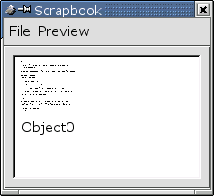

2.5 Das Scrapbook
Das Scrapbook (deutsch: Bibliothek) nimmt häufig verwendete Scribus-Elemente auf.
Öffnen Sie das Scrapbook über "Extras/Scrapbook":

Sie können hier beliebige Scribus-Elemente per Drag & Drop (siehe hierzu auch Kapitel 2.4)
in einer Bibliothek ablegen. Benötigen Sie diese später wieder, so ziehen Sie sie einfach wieder mit der Maus
in ein Scribus-Dokument.
Sie können auch mehrere Bibliotheken anlegen und auf der Festplatte speichern (Menü "File" im Scrapbook-Fenster).
Unter "Preview" können Sie die Grösse der Vorschau-Bilder der abgelegten Objekte einstellen (klein, mittel und gross).